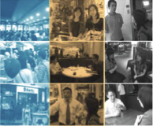

Waiting is a mobile app design and system service design. It uses waiting system to maximize customer waiting benefits, at the same time increasing the profits of all the Central Business District (CBD) stores, optimizing CBD shopping environment.It is my first design competition which won the 2nd Prize in National User Experience Design held by UPA.Furthermore,I think it is this competition that lead me go to the design business world.
For thousands of people in China, waiting is a serious problem in Central Business District (CBD),especially in restaurants.We believe that we can solve this problem by enabling users to use lining up time to go to other stores to buy goods and also reduce this burden for restaurants.
Solution:Use waiting system to maximize customer waiting benefits.The research in this project greatly helped the team form the eventual solution. We initiated many interviews with different stakeholders - waiter, restaurant managers and other store owners - before we devised any solutions. After solution, we did user tests of these peoples again.
I went to the restaurants in the CBD, as well as other stores in the CBD, to investigate their needs and their attitudes towards the proposal we envisioned. Sometimes we were refused, but most of the time they were eager to convey their ideas to us.
under construction...